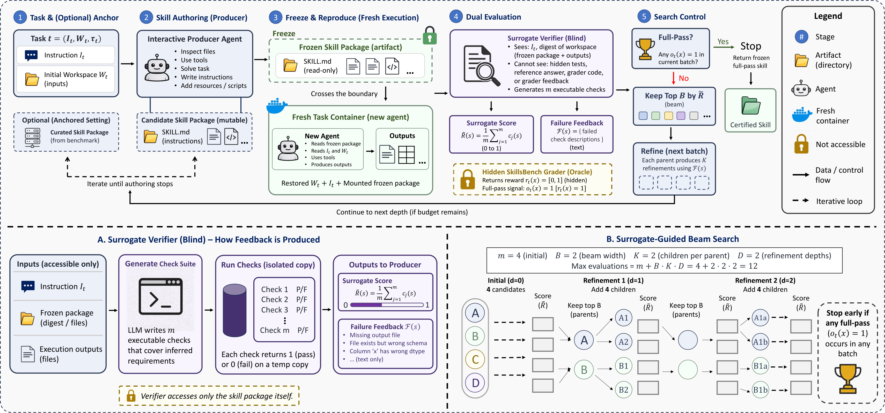
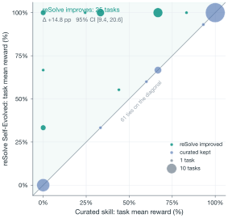
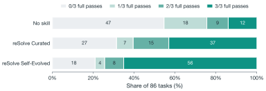
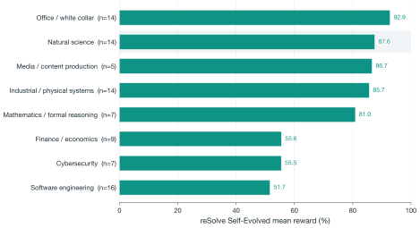

At a glance
SkillsBench v1.1 · 86 tasks · mean-of-3 reward, % · DeepSeek-V4-Pro
dashed line: strongest SkillsBench leaderboard entry with curated skills (GPT-5.5 / OpenHands), reported on a different harness
+14.8 points over curated. Within a fixed harness, a cheap model self-evolves skills that beat the human-written packages it started from (95% CI [9.4, 20.6]).
A pass must reproduce. Evolution certifies a frozen skill package only when a fresh agent in a fresh container re-derives the solution from it — not the lucky trajectory that authored it.
The recipe transfers. On Gemma 4 31B, a 31B non-reasoning model, the same pipeline lifts 36.2% curated to 41.4%.
Abstract
Agent skills are portable packages of instructions and resources an agent consults at deployment. Self-evolving them fails in two ways today. First, skills evolved from scratch underperform human-curated ones and, on a weak model, using no skill at all. Second, an evolution-time pass records one lucky trajectory that a fresh stochastic agent often fails to reproduce at deployment. We present reSolve, a per-task, oracle-in-the-loop framework built on three components. It decouples interactive solving from a self-contained deliverable that is independently re-executed in a fresh container, a protocol we call solve-and-reproduce. It enhances the sparse reward signal with a surrogate verifier that cannot access hidden tests or reference answers. It then runs verifier-guided beam search over a solution-construction graph. Within a fixed harness, a cheap model self-evolves skills that reach 74.9% mean-of-3, +14.8 points over the 60.1% human-curated baseline, exceeding the strongest official curated-skill result (67.3%, GPT-5.5/OpenHands). We also report observed failure cases and domain-level results, including performance on the 14 Natural Science tasks, to clarify when the approach does and does not help.
Method
reSolve evolves one task-specific skill package at a time. Each round, a producer agent authors a candidate skill, the candidate is frozen and handed to a new agent in a fresh container, and the resulting files are evaluated. A full pass from the hidden grader ends the search; otherwise a blind surrogate verifier diagnoses defects and guides the next refinement. The frozen package is the sole channel between the agent that writes a skill and the agent that uses it — exactly the condition the skill must satisfy at deployment.

Authoring and use are separated. The producer solves the task interactively, then its conversation, tool history, and workspace are discarded. Only the frozen package — a SKILL.md plus resources and scripts — crosses into a fresh container, where a new agent must re-derive the solution from it. A pass certifies the deliverable, not the authoring trace.
The hidden grader says only pass or fail. For each candidate, a verifier that cannot see hidden tests, reference answers, or grader output writes m executable checks inferred from the task description alone. Their pass rate scores progress, and the failed-check descriptions tell the producer what to repair.
Evolution is beam search over a solution-construction graph: sample initial candidates, keep the top B by surrogate score, refine each into K children, repeat for D depths. Breadth and depth become an explicit test-time-compute knob, and a keep-better rule guarantees the result never falls below the curated baseline.
Results
DeepSeek-V4-Pro ranks 14th of 24 on the official leaderboard. Running it in the reSolve harness with the curated packages gives 60.1%, comparable to the 5th-ranked entry. Letting it self-evolve those packages reaches 74.9% — 7.6 points above the strongest official curated-skill result, though official rows come from different harnesses. Pass@3 rises from 68.6% to 79.1%.
| Rank | Model | Agent | No skills | Curated | Δ |
|---|---|---|---|---|---|
| reSolve results · this work | |||||
| — | DeepSeek V4 Pro | reSolve Self-Evolved | 30.614th | 74.91st | +44.3 |
| — | DeepSeek V4 Pro | reSolve Curated | 30.614th | 60.15th | +29.6 |
| — | Gemma 4 31B | reSolve Self-Evolved | 14.724th | 41.420th | +26.7 |
| — | Gemma 4 31B | reSolve Curated | 14.724th | 36.221st | +21.5 |
| Official leaderboard · curated skills | |||||
| 1 | GPT-5.5 | OpenHands | 51.5 | 67.3 | +15.8 |
| 2 | GPT-5.5 | Codex | 46.8 | 66.5 | +19.7 |
| 3 | Opus 4.7 | Claude Code | 43.0 | 61.2 | +18.2 |
| 4 | Gemini 3.1 Pro | Gemini CLI | 36.0 | 60.8 | +24.8 |
| 5 | GLM 5.1 | OpenHands | 32.7 | 58.4 | +25.7 |
| 6 | Gemini 3 Flash | Gemini CLI | 34.2 | 54.6 | +20.4 |
| 7 | Opus 4.8 | OpenHands | 45.7 | 54.1 | +8.4 |
| 8 | Kimi K2.6 | OpenHands | 33.4 | 54.0 | +20.6 |
| 9 | Opus 4.7 | OpenHands | 42.1 | 53.1 | +11.1 |
| 10 | MiniMax M3 | OpenHands | 29.7 | 53.0 | +23.3 |
| 11 | Gemini 3.1 Pro | OpenHands | 33.8 | 52.8 | +19.0 |
| 12 | GPT-5.2 | Codex | 29.7 | 51.7 | +22.0 |
| 13 | Opus 4.6 | Claude Code | 33.7 | 50.2 | +16.5 |
| ··· | |||||
| 14 | DeepSeek V4 Pro | OpenHands | 26.9 | 50.1 | +23.2 |
| 15 | Opus 4.5 | Claude Code | 23.8 | 49.0 | +25.2 |
| 16 | Gemini 3.5 Flash | OpenHands | 41.1 | 48.2 | +7.1 |
| 17 | Sonnet 4.6 | OpenHands | 33.5 | 47.2 | +13.6 |
| 18 | DeepSeek V4 Flash | OpenHands | 27.5 | 44.7 | +17.2 |
| 19 | Grok 4.3 | OpenHands | 22.8 | 41.7 | +18.8 |
| 20 | GPT-5.4 Mini | OpenHands | 29.9 | 41.4 | +11.5 |
| 21 | Sonnet 4.5 | Claude Code | 16.7 | 36.2 | +19.5 |
| 22 | MiniMax M2.7 | OpenHands | 18.1 | 34.9 | +16.8 |
| 23 | Haiku 4.5 | Claude Code | 8.8 | 30.1 | +21.3 |
| ··· | |||||
| 24 | Gemini 3.1 Flash Lite | OpenHands | 16.0 | 20.1 | +4.1 |


Each ablation removes one component on the same 86 tasks; all three paired intervals exclude zero. The curated anchor contributes most, then beam search, then surrogate ranking.
| Configuration | Mean-of-3, % | Δ vs full |
|---|---|---|
| Full reSolve framework | 74.9 | — |
| w/o surrogate ranking | 66.0 | −8.9[−14.3, −4.5] |
| w/o beam search (greedy chain) | 59.4 | −15.5[−20.3, −11.3] |
| w/o curated anchor (from scratch) | 44.0 | −30.9[−40.7, −21.6] |
From-scratch evolution is still far from ineffective: with no human-written skill at all, it lifts the 30.6% no-skill baseline to 44.0%, above mid-tier leaderboard entries running with curated packages. But refinement of an expert anchor remains the far more economical path.

What we learned
Anchored on the curated package, the producer starts from working expert knowledge and only needs a task-specific improvement: +14.8 points. From scratch, the whole burden of exploration falls on the generator, and the result stays 30.9 points below the full framework. The benefit also scales with the model doing the evolving — Gemma 4 31B gains +5.2 where DeepSeek gains +14.8 — so evolution amplifies capability rather than substituting for it.
All 77 retained evolved packages contain at least one executable entry point; the archive holds no prose-only package. A procedure externalized as code survives re-execution with far less interpretation than guidance a fresh agent must re-derive. Consistent with this, an agent-free arm that simply invokes the saved entry point reaches 71.4%, within 3.5 points of the full system.
Across 258 deployment trials, the agent rarely crashes; it completes confidently and produces files the grader rejects. Failed trials are not lazy either — on 11 of 14 tasks with both a passing and a failing trace, the failing one used more tool steps. Extra actions are not free: an agent that keeps acting after the bundled solver has produced a correct artifact can overwrite it.
Expose an entry point that carries out the procedure rather than describing decisions the agent must make. Pin dependencies, paths, inputs, outputs, and completion criteria. Make execution idempotent and checkpointed, so a valid intermediate artifact survives later recovery attempts. Assess quality at the package boundary — a pass certified by reSolve is one that search found and a fresh agent then reproduced. That is the difference between a skill and a lucky trajectory.
Citation
@techreport{liu2026resolve,
title = {Self-Evolving Skills via Surrogate-Guided
Solve-and-Reproduce},
author = {Liu, Jiale and Ren, Pinze and Xia, Yuqi and
Wang, Huan and Zhao, Zhenlin and Dong, Siming},
institution = {Cleer Science},
year = {2026}
}